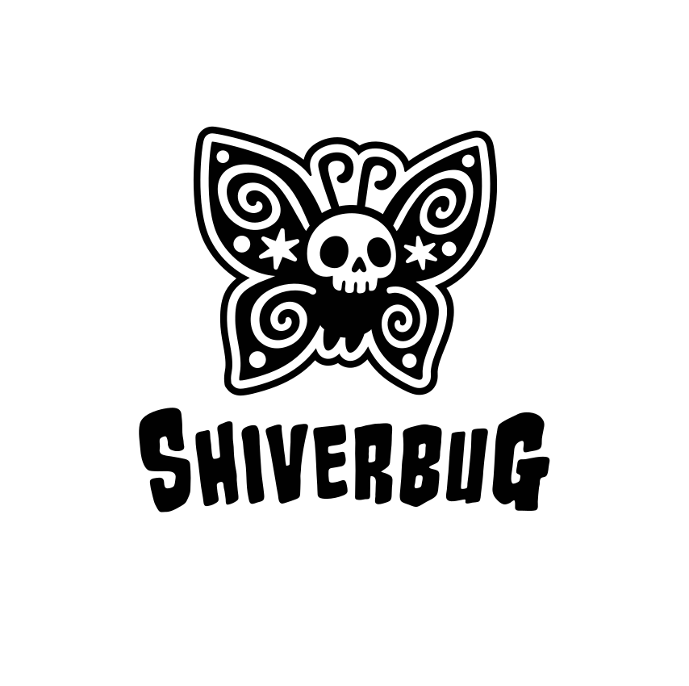
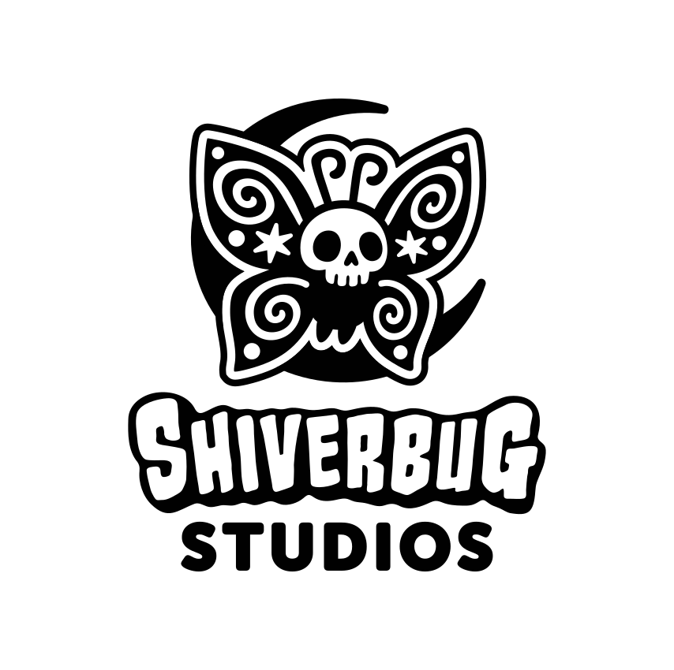

For press & partners
Press Kit
Everything you need to write about Shiverbug Studios and Out of Water: fact sheets, copy you can paste straight in, the brand pack, screenshots and a trailer. Use any of it. If you need something that isn't here, just ask.
Last updated August 2026
Studio Fact Sheet
- Studio
- Shiverbug Studios
- Legal name
- Shiverbug Studios Ltd
- Founded
- 2025
- Founders
- Lewis Mennim, Ryan Hughes, Garrett Windus
- Based in
- North East England, United Kingdom
- Registered office
- Victoria Building, Victoria Road, Middlesbrough, TS1 3AP
- Company no.
- 16485763 (England & Wales)
- Team
- 11 people, plus a talent pool of 5 regular collaborators
- Current project
- Out of Water — in development
- Services
- Co-development and work-for-hire: concept art, stylised 3D art, hard surface art, design & development
- Engines
- Unity, Unreal Engine 5
- Website
- shiverbugstudios.com
- Press contact
- contact@shiverbugstudios.com
- Socials
- linktr.ee/shiverbugstudios
Boilerplate
Approved copy, at three lengths. Paste as-is, or edit to fit.
One line (21 words)
Shiverbug Studios is an indie game developer in North East England making joyful couch co-op games and co-developing other studios' projects.
Short (58 words)
Founded in 2025, Shiverbug Studios is an eleven-strong team of designers, artists and programmers based in North East England. The studio is building its debut title, Out of Water, a two-player split-screen collectathon platformer, and takes on co-development and work-for-hire for other studios alongside it: concept art, stylised and hard surface 3D art, level design and gameplay programming.
Full (107 words)
Shiverbug Studios is an indie game development studio based in North East England, founded in 2025 on a simple idea: games should be joyful, shared, and welcoming for players of all ages. The kind of thing a whole household can pile onto the sofa for. The team of eleven designers, artists and programmers is currently building its debut title, Out of Water, a two-player split-screen collectathon platformer in which a turtle and a seagull explore a colourful world together. Alongside it the studio co-develops for other teams, covering concept art, stylised and hard surface 3D art, level design and gameplay programming in Unity and Unreal Engine 5.
About the Studio
Shiverbug Studios is an indie game development studio based in North East England, founded in 2025 on a simple idea: games should be joyful, shared, and welcoming for players of all ages. The kind of thing a whole household can pile onto the sofa for.
The team of eleven designers, artists and programmers is currently building its debut title, Out of Water, and takes on co-development and work-for-hire alongside it, working in Unity and Unreal Engine 5 and fitting into whatever pipeline a partner already runs. You'll find the shiverbugs at Gamebridge, GameNext, Develop:Brighton, and anywhere else the UK dev scene gets together.
Recognition & Programmes
- TranzfuserPublic Vote Winner
- UK Games FundSupported studio
- Games RepublicMember
- Entrepreneurs ForumMember
Out of Water — Game Fact Sheet
- Title
- Out of Water
- Developer
- Shiverbug Studios Ltd
- Publisher
- Unannounced — publisher conversations welcome
- Genre
- Collectathon platformer
- Players
- 2, local split-screen co-op
- Platforms
- Targeting PC (Steam and Steam Deck), Xbox, PlayStation and Nintendo Switch
- Engine
- Unity
- Release date
- Not announced
- Price
- Not announced
- Age rating
- Not yet rated — aimed at all ages
- Languages
- English
- Status
- In development
Out of Water is a 2-player split-screen collectathon platformer. One of you is a turtle. The other is a seagull. Together you explore a colourful world full of charm, clever challenges and an army of crabs, in couch co-op made for siblings, parents, grandparents, whoever's around.
Key features
- Two players, one sofa. Split-screen co-op built for couch play, not bolted on afterwards.
- A turtle and a seagull. Two very different heroes with two very different ways of getting about.
- Collect everything. A proper collectathon in the spirit of the classics we grew up on.
- An army of crabs. Yes, an army. Of crabs.
Images & Video
Click any image to open the full-size file, or take the lot from the screenshots bundle. Everything here is from a build in development and does not represent the finished game.


Trailer
From our ProtoPlay build. A new trailer is in production; if you're working to a deadline, tell us and we'll let you know when it lands.
Logos
The primary lockup, from the 2026 brand pack. Vector (SVG) is the default; the raster fallbacks are 1711 px PNGs. Files marked CMYK carry print colour values and live in the logo bundle.

{kind=link}
{kind=link}

{kind=link}
{kind=link}
{kind=link}
{kind=link}
{kind=link}
{kind=link}
{kind=link}

{kind=link}
{kind=link}
Using the logo
Please do
- Use the white lockup on dark backgrounds and the black one on light.
- Leave clear space around it of at least the height of the word "STUDIOS".
- Reach for the vector first; use PNG only where SVG won't go.
- Keep it at 40 px tall or larger, so the linework still reads.
Please don't
- Stretch, squash, rotate or skew it.
- Recolour it, add gradients, outlines, shadows or other effects.
- Place it on a busy image, or on a colour it hasn't got contrast against.
- Redraw the wordmark, or rebuild the lockup with different spacing.
Colour & Typography
The values below cover everything you need to lay out a page or a thumbnail around the logo. Need something more specific? Ask us.
Colour palette
#010101
RGB 1, 1, 1CMYK 0, 0, 0, 100
#FFFFFF
RGB 255, 255, 255CMYK 0, 0, 0, 0
#05CDF2
RGB 5, 205, 242CMYK 98, 15, 0, 5
#08E2F2
RGB 8, 226, 242CMYK 97, 7, 0, 5
Gradients
Blue and cyan together, for on-screen and digital work.
#08E2F2 → #05CDF2#05CDF2 → #08E2F2Typefaces
Headings and titles only. Never body copy.
Supporting titles and short display lines.
Everything you actually have to read.
These are the brand's typefaces. This website sets its own type in Bricolage Grotesque and Instrument Sans, which are open licence and safe to serve on the web.
Team
- Lewis MennimCEO · Co-Founder
- Ryan HughesCFO · Co-Founder
- Garrett Windus3D Artist · Co-Founder
Behind them, eleven people in total across concept art, character and environment art, level and narrative design, and gameplay programming, plus a talent pool of five regular collaborators covering 3D art, animation, sound and social. Full profiles, portfolios and credits are on the team page.
Interview requests go to contact@shiverbugstudios.com and we'll put you in front of whoever's best placed to answer.
Permissions
You have our permission to use anything in this kit — screenshots, footage, artwork, logos — in articles, videos, streams and other coverage of Shiverbug Studios and our games. That includes monetised coverage. You don't need to ask us first, and you don't owe us anything for it.
What we ask in return: don't alter the logo, don't present in-development material as final, and don't use our marks in a way that suggests we're involved in something we aren't. Credit is always appreciated but never required.
Press Contact
Writing something, chasing an asset, or after an interview with the team?
Use the contact formOr email us directly at contact@shiverbugstudios.com. You'll hear back within a couple of working days.